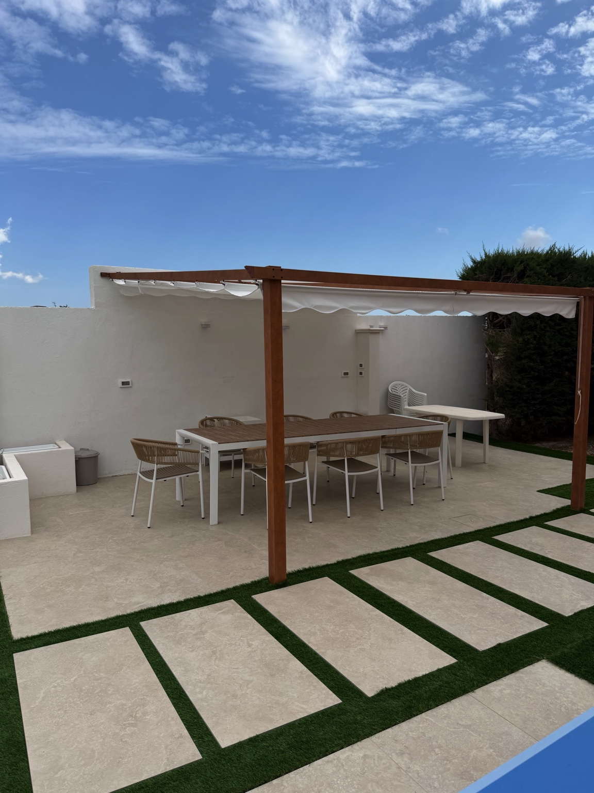
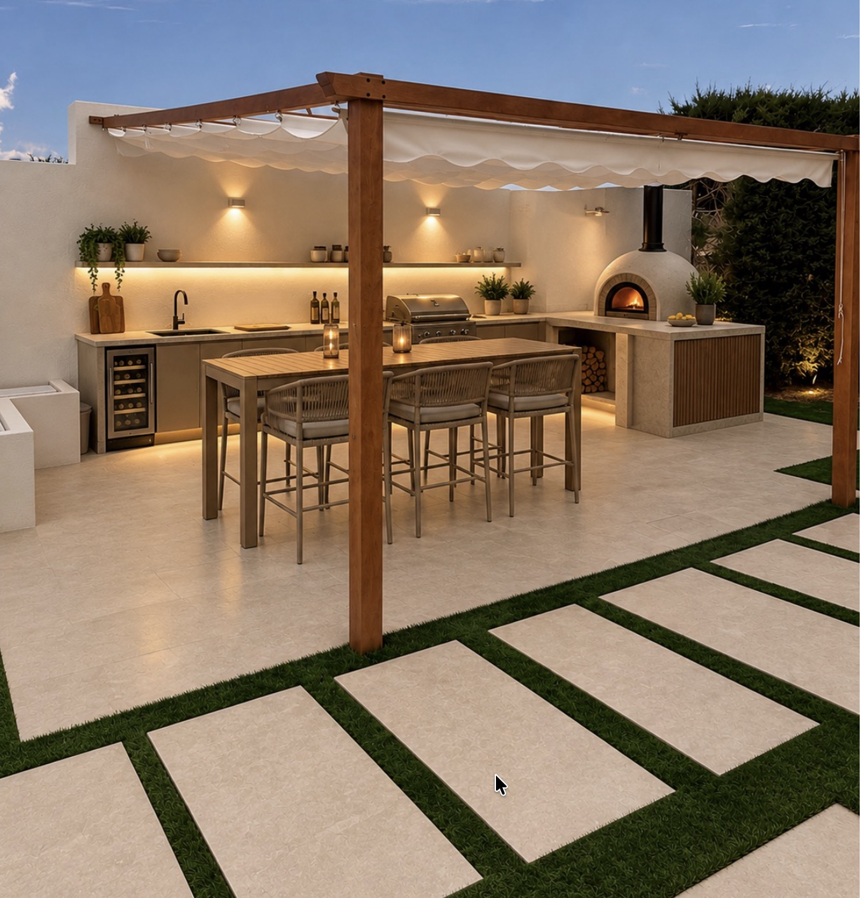
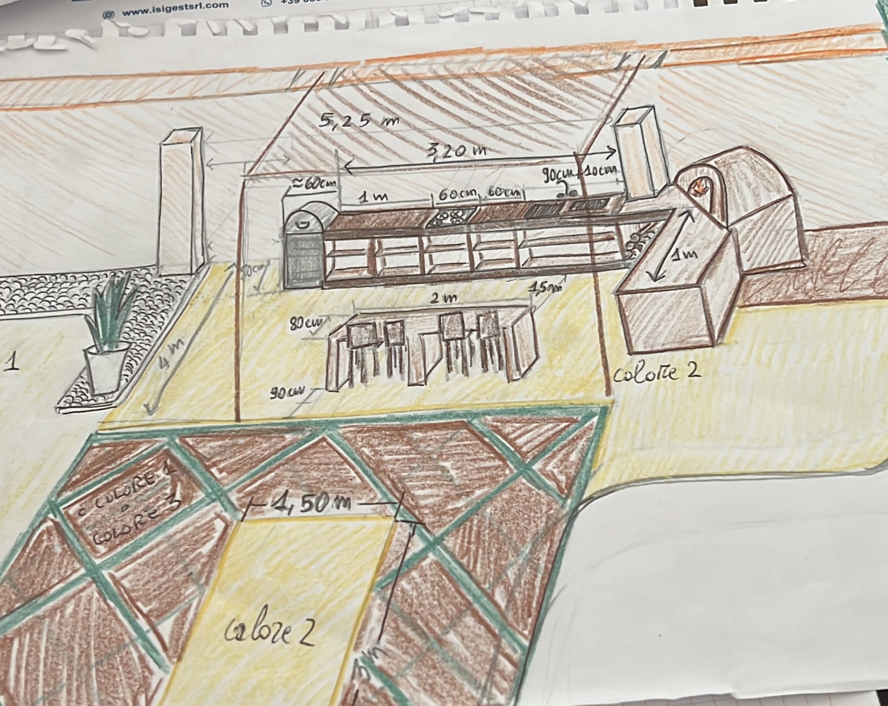

01
Creazione cucina esterna
L’idea è creare una cucina a L sul muro, dove il lato corto della L ospita un forno per pizza e un bancone. Al centro della pergola è previsto un tavolo alto da 6 persone con sgabelli.


